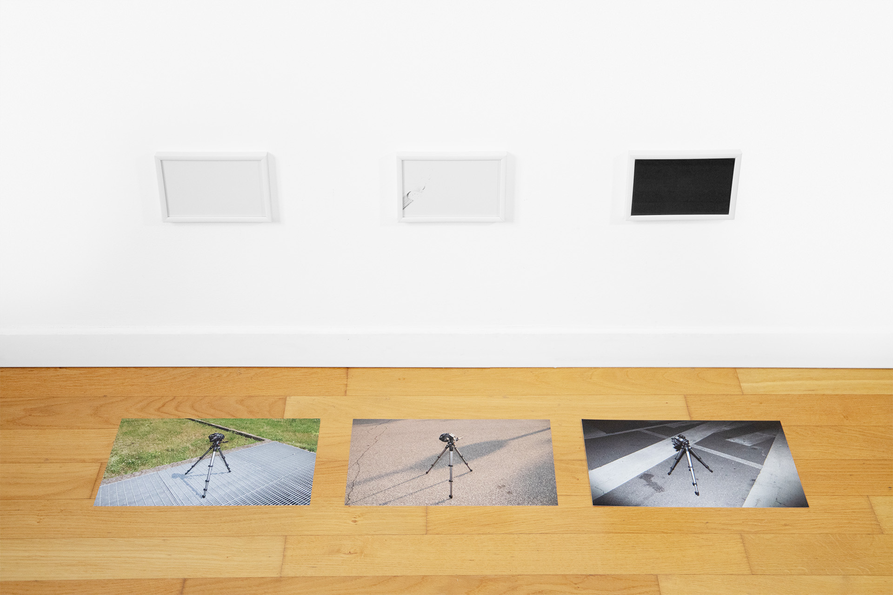
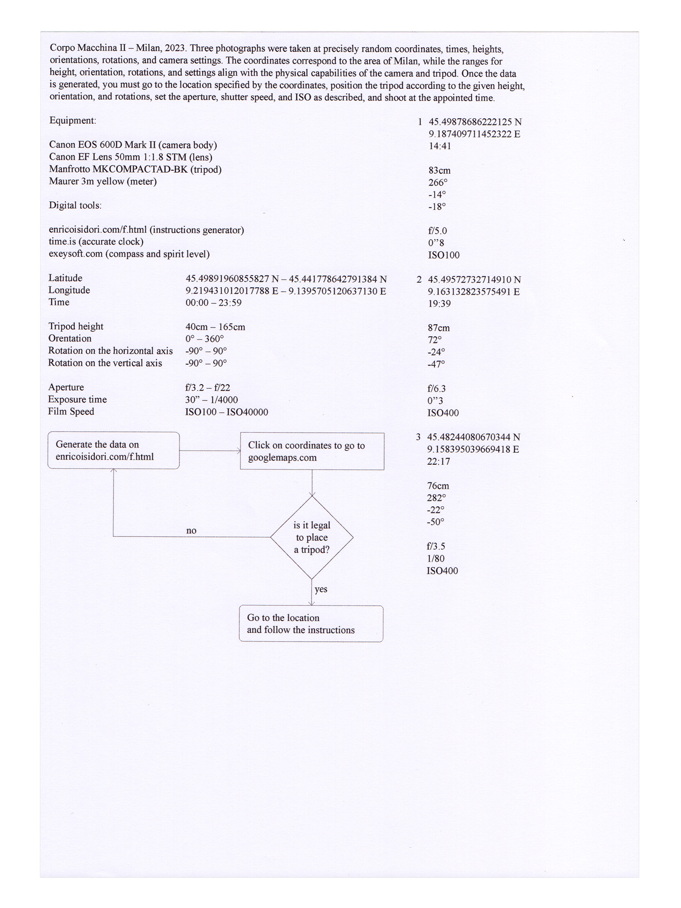
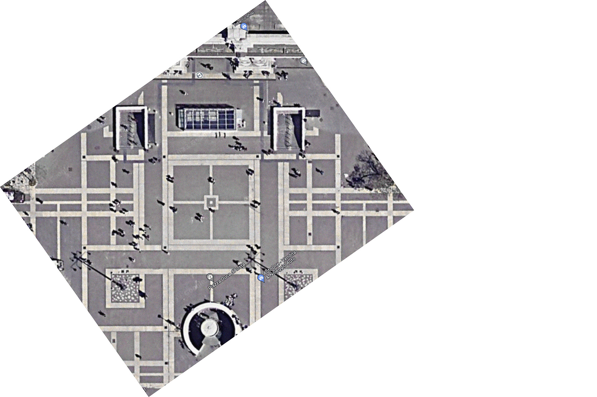
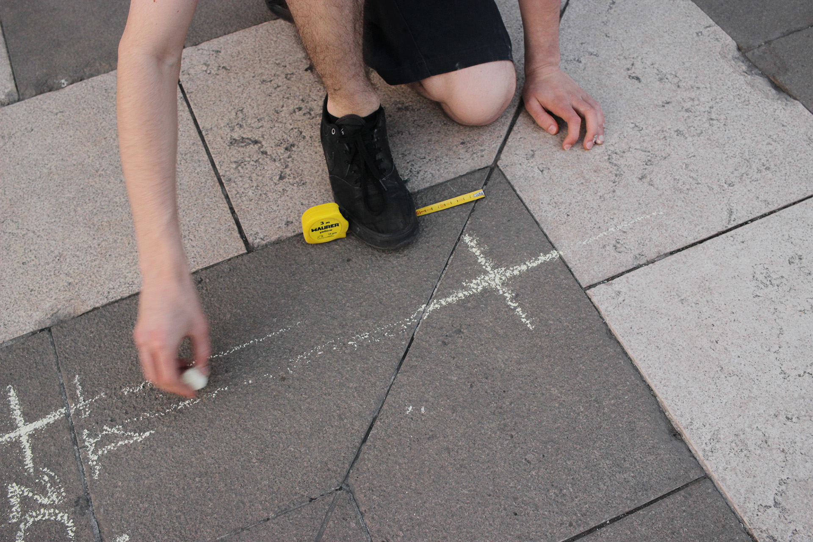
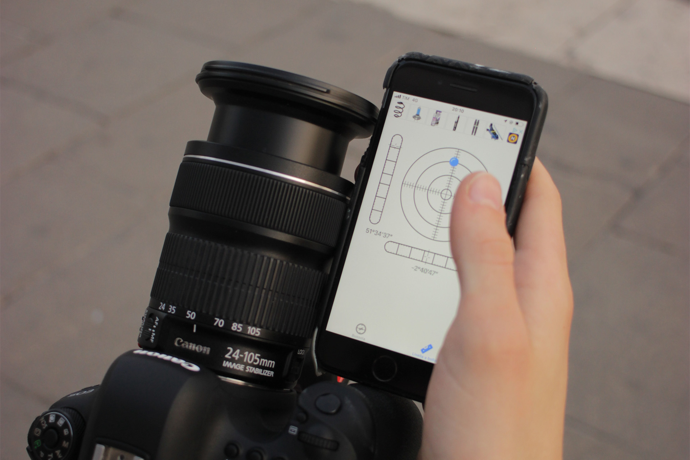
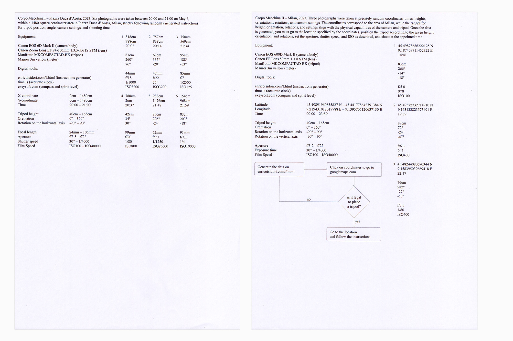

These are photographs taken precisely at random: coordinates, time, height, orientation, rotations, and camera settings are randomly generated. The ranges of the coordinates correspond to a certain area, while the ranges of height, orientation, rotations, and settings correspond to the physical possibilities of the camera and tripod. Once the data has been generated, one has to go to the location corresponding to the coordinates, position the tripod according to the given height, orientation, and rotations, set the aperture, shutter speed, and ISO as described, and shoot at the appointed time.
You have to be a passive operator of the camera who becomes a photographer, author, body – you have to follow instructions – become a machine. The photo's metadata has been generated before they were taken. It is not the aesthetic will that dictates the data the machine produces, but it is the data the machine produces that dictates the aesthetic will.
Links
f.html (Generator)
Corpo Macchina I (1) 14:41

Corpo Macchina I (1) 14:41
Corpo Macchina I (1) 14:41
Corpo Macchina I (1) 14:41

Corpo Macchina I (1) 14:41

Corpo Macchina I (1) 14:41
Corpo Macchina II (1) 14:41

Corpo Macchina II (2) 19:39
Corpo Macchina II (3) 22:17



Aerial view of the central square area of Piazza Duca d'Aosta.


